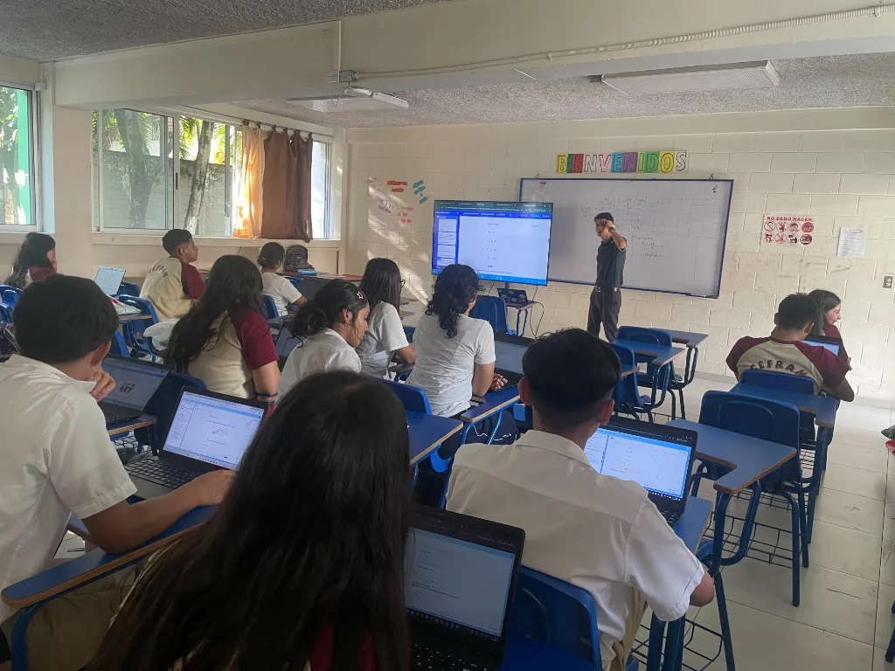
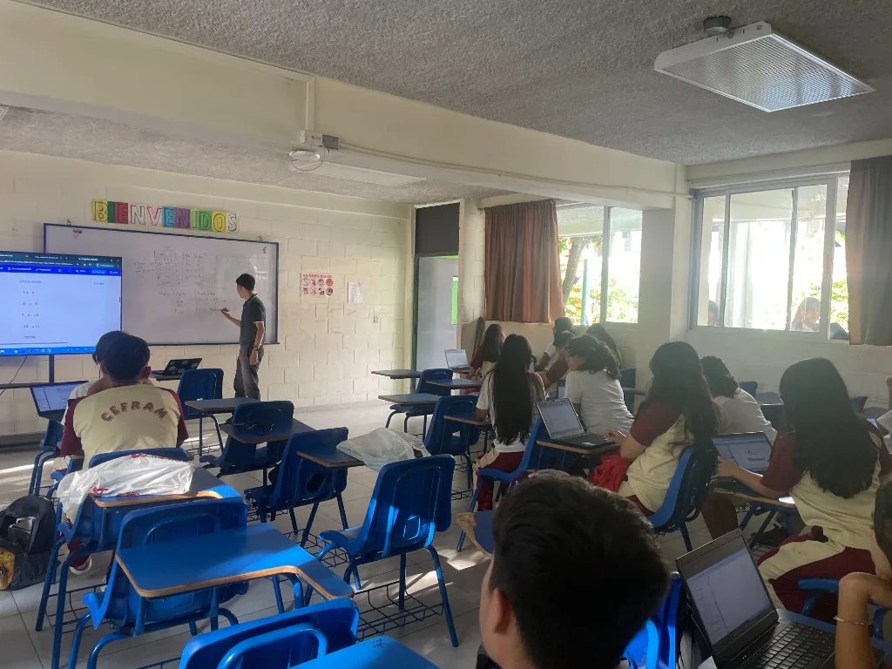
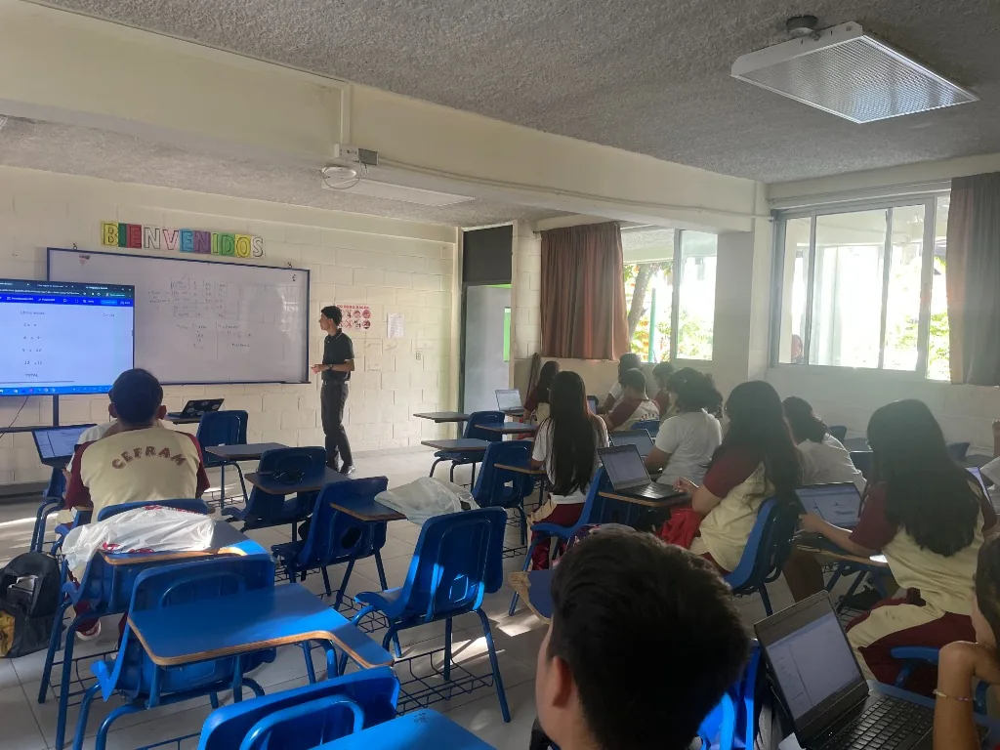

Educación Básica
Formación integral en valores, pensamiento crítico y habilidades clave desde 7.º hasta 9.º grado.
Formación integral en valores, pensamiento crítico y habilidades clave desde 7.º hasta 9.º grado.
En CEFRAM, el nivel de Educación Básica fomenta el desarrollo socioafectivo, cognitivo y motor de los alumnos. Buscamos formar estudiantes autónomos, reflexivos y comprometidos con sus estudios a través de metodologías participativas y valores éticos. Cada ciclo fortalece las bases necesarias para continuar con confianza hacia el bachillerato.
Desarrollo del pensamiento crítico, proyectos científicos, responsabilidad social y preparación previa al bachillerato. Se promueven hábitos de estudio y la participación activa en el aprendizaje.


